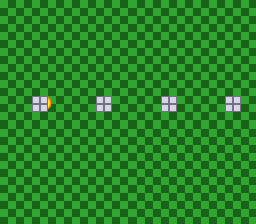

|
OpenSNES
Modern Open-Source SNES Development SDK
|
|
OpenSNES
Modern Open-Source SNES Development SDK
|
One Mode 7 plane split into two layers by bit 7 of its pixels, with a sprite passing between them.

SETINI bit 6 (EXTBG) gives Mode 7 a BG2 that shows the same plane as BG1 but reads bit 7 of every pixel as a priority bit. Here the floor's pixels have bit 7 clear and the pillars' have it set, so the ball — a priority-1 sprite — rolls over the floor and behind the pillars of one single plane. Press A to switch EXTBG off: BG1 is shown instead, one layer, and the ball covers the pillars too.
Open extbg.sfc in luna (or any SNES emulator) and press A.
testing/manifests/mode7_extbg.toml checks SETINI ($40 / $00 / $40) and the main-screen designation across two A presses, the 1:1 matrix and the scroll, and that the ball moves. The visual baselines capture the occlusion.
| Module | Purpose |
|---|---|
| console | System initialization, WaitForVBlank |
| dma | Mode 7 VRAM upload, palettes, sprite tiles |
| sprite | The ball (OAM) |
| input | The A button |
| mode7 | Matrix, scroll, mode7SetExtBg() |
| tile | The ball's tiles, built from pixels |